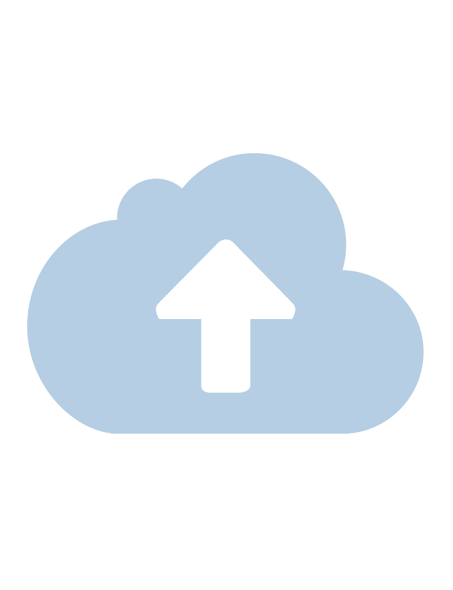

Analyze Chess Positions from Images
Upload a screenshot of your chess game and get FEN notation instantly

Drag & Drop or Click to Upload
Supported formats: JPG, PNG
Instant Analysis
Get FEN notation in seconds from any chess position screenshot
Play & Analyze
Continue playing from the detected position or analyze with engines
Share Easily
Export to Lichess, Chess.com or play directly on our platform